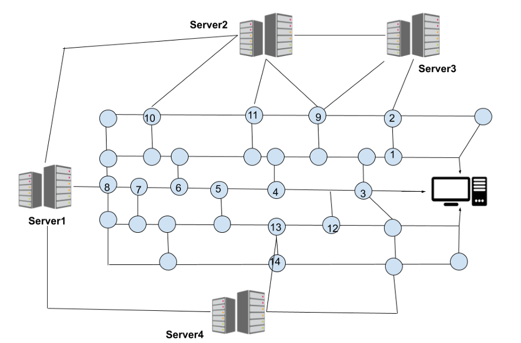
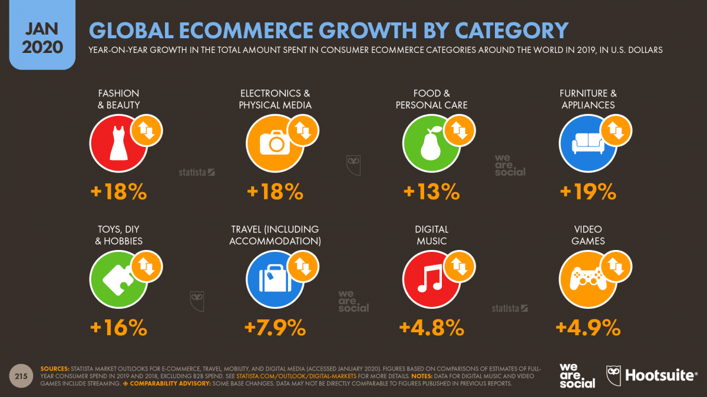
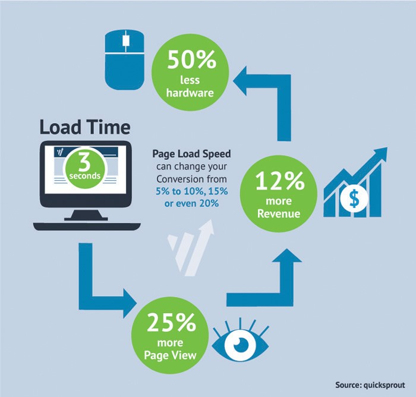
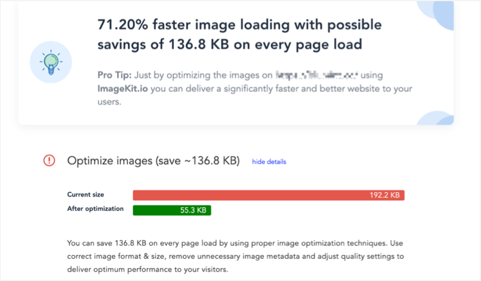
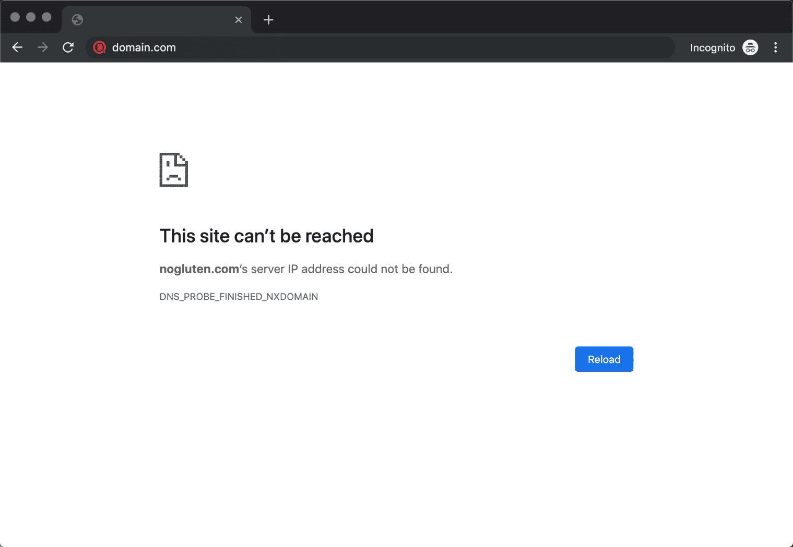
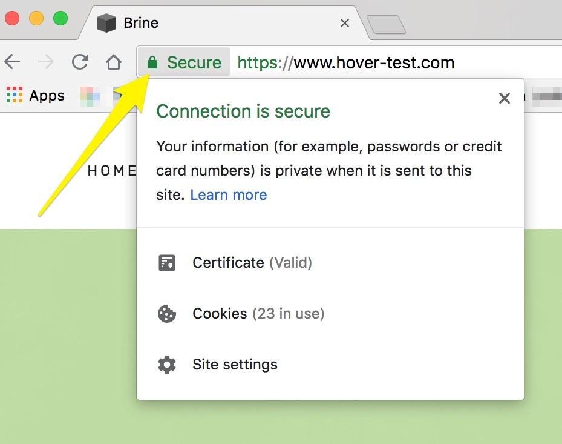
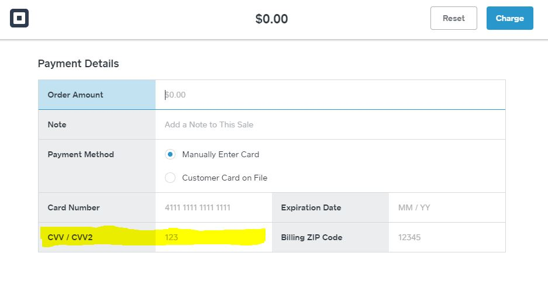

The internet is made up of several networks (controlled by different businesses) that work in fandom with each other to create end to end connectivity amongst different devices. This basically allows people in different places of the world to connect to the same server/website using the internet (depending on the several different service providers/operators in different areas).
The benefit to this is that it allows anyone to be able to create something on the internet (or make phone calls, email, etc) and share it globally which they may not be able to do physically which especially would be beneficial in these times with COVID-19.
Online shopping is a growing industry and with more people buying stuff online every day, it is important that these sites are well managed and prepared for large volumes of interactivity. One of the most important parts to this is the speed/loading time of the website as this could either make or break your website.
All information is shared on the internet using binary code (bits). Each element (music, pictures, videos, etc) has an amount of bits (file size) that the internet needs to transfer/share its information on the internet (through its binary code) which is why reducing file sizes for elements before putting them on especially an online shopping website is important as users won’t get frustrated by the increased bandwidth of their device resulting in an increased loading time consequently causing them to avoid using the site.
Images are very important in this sense as you already have several to display different products which calls on an already large process for the server and increased file sizes could potentially overload the server with bit information decreasing the loading time for the products which will frustrate users as this is the main reason why they use online shopping websites.
Relating to the above, having a strong domain name which is kept as short as possible will benefit users as it wont be hard to find the website, and the browser by means of it being easily locatable and accessible. (long domain names could potentially be harder for the browser to find and is prone to website breakage because of this).
Cybersecurity is a growing problem in todays networking word and is an important issue that must be considered in an online shopping website. This is because hackers can exploit vulnerabilities in installed security software’s at any time and will be able to can see and steal confidential information like users personal details and card numbers without authorization which signals the importance of regularly updating that software to make sure there are no vulnerabilities.
Users are more likely to use the website if it has used TSL or SSL which displays on the URL bar on the far left when hovered over a lock. This basically means that the website has provided a digital certificate to the browser telling it that your http request (or URL) is safe and secured.
In this sense, using Address Verification Systems and CVV numbers also important as it assures users that the information, they input can only be unique and the SSL/TSL “lock” assures the protection of their personal data.
